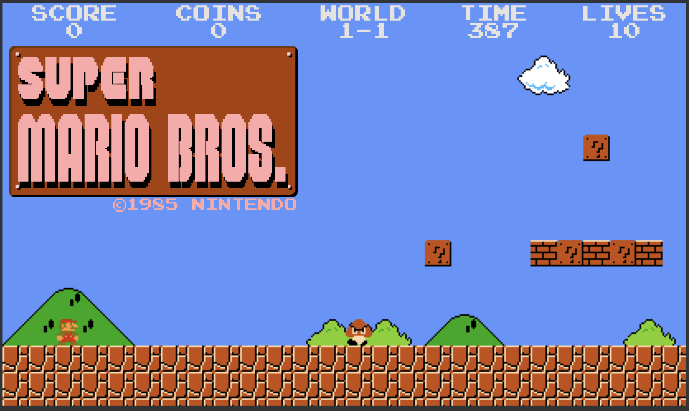

Super Mario Bros was released in 1985 for the Nintendo Entertainment System.
It featured Mario and Luigi trying to rescue Princess Toadstool from Bowser.
The side-scrolling platform game was an instant classic and helped launch the
popularity of the Super Mario series.

Super Mario is a classic 2D side-scrolling platform game. The goal is to guide Mario through the Mushroom Kingdom, survive the obstacles, defeat enemies, and save Princess Peach from Bowser.
After traversing the Mushroom Kingdom and defeating Bowser's forces, Mario reaches the end of World 8-4. He confronts Bowser on a bridge over lava for a final battle. Mario times his jumps to get past Bowser, touch the axe, and cut the bridge. Bowser falls into the lava below. Mario enters the castle and rescues Princess Peach. Fireworks celebrate his victory. The game ends with Mario and Peach together as we see a short recap of his journey.